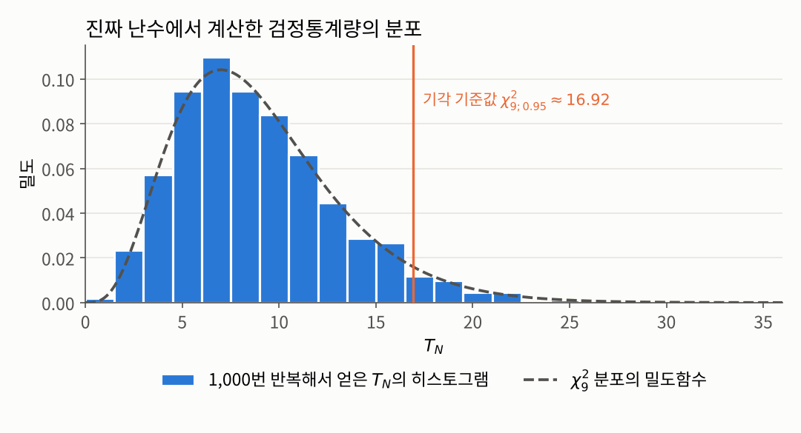
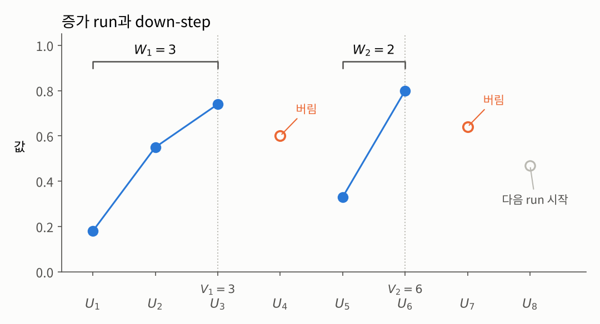
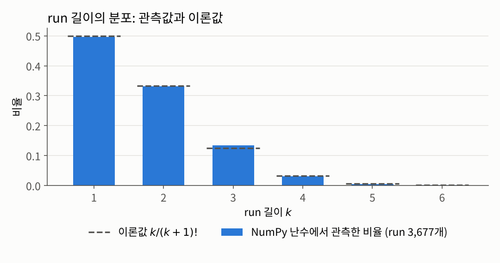

1.2 난수 생성기의 통계적 검정
1장 몬테카를로 시뮬레이션 · 우리의 난수는 정말 난수처럼 행동하는가
들어가며
지난 글에서는 선형 합동 생성기(LCG)로 균등난수를 흉내 내는 방법을 보았고, 주기가 길어도 나쁜 난수일 수 있다는 것을 RANDU의 예로 확인했습니다. 그런데 RANDU의 결함은 \(u_{k+2} - 6u_{k+1} + 9u_k\)라는 특별한 조합을 미리 알고 있었기 때문에 찾을 수 있었습니다. 그래서 지난 글은 이런 질문을 남겼습니다.
그런 사전 지식 없이, 주어진 수열이 “i.i.d. 균등분포를 따른다”고 봐도 되는지를 어떻게 체계적으로 판정할 수 있을까요?
이번 글에서는 이 질문을 통계적 가설검정의 문제로 바꾸어 답합니다. 값들이 \([0,1]\) 위에 고르게 퍼져 있는지 보는 균등성 검정과, 연속된 값들이 서로 독립처럼 행동하는지 보는 run 검정을 차례로 만들고, 둘을 실제 생성기들에 적용해 보겠습니다.
“좋은 난수인가?”를 가설검정으로 바꾸기
생성기가 만든 수 \(\boldsymbol{u}_N := (u_1, \ldots, u_N)\)이 주어졌다고 합시다. 우리가 확인하고 싶은 주장은 다음과 같습니다.
\[H_0:\ u_1, \ldots, u_N \text{은 i.i.d. } \mathsf{Unif}(0,1) \text{ 확률변수 } U_1, \ldots, U_N \text{의 실현값이다.}\]
물론 과목 소개 글과 지난 글에서 보았듯이 이 수들은 실제로는 결정론적으로 계산된 값이므로, 엄밀히 말하면 \(H_0\)은 거짓입니다. 그래서 질문을 이렇게 바꿉니다. “이 수열을 보고 진짜 i.i.d. 균등난수와 구별할 수 있는가?” 구별할 수 없다면, 시뮬레이션에서 진짜 난수 대신 써도 괜찮다고 판단하는 것입니다.
여기에는 보통의 통계 분석과 반대인 점이 하나 있습니다. 평소에는 귀무가설을 기각하는 것이 “무언가를 발견했다”는 반가운 결과입니다. 하지만 여기서 \(H_0\)은 우리가 바라는 이상적인 상태이므로, 기각되지 않기를 바라면서 검정을 합니다.
값들이 고르게 퍼져 있는가: 균등성 검정
히스토그램이 얼마나 들쭉날쭉한가
가장 먼저 떠오르는 방법은 히스토그램입니다. 구간 \([0,1]\)을 길이가 같은 \(r\)개의 칸으로 나누고, 각 칸에 들어간 수를 셉니다. 진짜 균등난수라면 각 칸에는 평균적으로 \(N/r\)개씩 들어가야 합니다.
그렇다고 막대 높이가 정확히 \(N/r\)이 되지는 않습니다. 무작위이니 조금씩 들쭉날쭉한 것이 오히려 자연스럽습니다. 그러므로 물어야 할 것은 “막대가 \(N/r\)과 같은가?”가 아니라 “막대가 \(N/r\)에서 벗어난 정도가 우연이라고 보기에 너무 큰가?”입니다. 이 판단을 숫자로 하려면 벗어난 정도를 하나의 수로 요약하는 방법과, 그 수가 우연만으로 얼마나 커질 수 있는지에 대한 기준이 필요합니다. 이것이 가설검정의 틀입니다.
가설검정과 카이제곱분포
유의수준 \(\alpha\)는 “진짜 난수인데도 가짜라고 잘못 판정하는 비율”을 얼마까지 허용할지 정하는 값이며, 흔히 \(\alpha = 0.05\)를 씁니다. 가설검정의 기초는 기초 통계학을 참고하시기 바랍니다.
한 가지 주의할 점이 있습니다. \(H_0\)을 기각하지 못했다고 해서 \(H_0\)이 참이라고 증명된 것은 아닙니다. “이 검정으로는 진짜 난수와 구별되는 증거를 찾지 못했다”는 뜻일 뿐입니다. 이 점은 글의 뒷부분에서 중요하게 다시 등장합니다.
기각 기준을 정할 때 쓰는 분포가 카이제곱분포입니다.
예를 들어 \(\chi^2_{9;0.95} \approx 16.919\)는 자유도 \(9\)인 카이제곱분포에서 \(95\%\)의 값이 이보다 작다는 뜻입니다. 이 값보다 큰 통계량은 \(5\%\) 확률로만 나오는 “드문” 값입니다. 정의에서 바로 \(\chi^2_k\)의 평균은 \(k\), 분산은 \(2k\)임을 알 수 있습니다(\(\mathbb{E}[Z^2] = 1\), \(\mathrm{Var}(Z^2) = 2\)).
이제 히스토그램이 들쭉날쭉한 정도를 요약하는 통계량과, 그 분포에 대한 정리를 쓸 수 있습니다. 아래에서 \(\boldsymbol{u}_N \cap I\)는 \(u_1, \ldots, u_N\) 중 구간 \(I\)에 들어가는 것들을 뜻하고, \(|\boldsymbol{u}_N \cap I|\)는 그 개수를 뜻합니다.
정리의 의미를 풀어 보겠습니다. 각 칸의 개수 \(N_j\)는 평균이 \(Np_j\)이고 분산이 대략 \(Np_j\)인 확률변수라서, \((N_j - Np_j)^2/(Np_j)\)는 “표준화된 차이의 제곱”이고 칸 하나당 대략 \(1\) 정도의 크기를 가집니다. 이것을 \(r\)개 더한 것이 검정통계량입니다.
그렇다면 자유도는 왜 \(r\)이 아니라 \(r - 1\)일까요? 모든 칸의 개수를 더하면 반드시 \(N_1 + \cdots + N_r = N\)이 되기 때문입니다. \(r - 1\)개 칸의 개수를 알면 마지막 칸은 저절로 정해지므로 자유롭게 움직이는 양은 \(r - 1\)개뿐이고, 증명에서 정사영의 차원이 \(r - 1\)이었던 것이 바로 이 제약을 반영합니다. 또 이 정리는 극한분포에 관한 것이므로, 실무에서는 각 칸의 기대 개수 \(Np_j\)가 대략 \(5\) 이상이 되도록 \(N\)을 충분히 크게 잡습니다.
균등성 검정과 적용
\([0,1]\)을 길이 \(1/r\)인 칸으로 나누면 \(H_0\) 아래에서 \(p_j = 1/r\)이므로, 정리 1.2.3을 그대로 적용할 수 있습니다.
정리 1.2.3에 의해 \(H_0\) 아래에서 \(T_N\)은 근사적으로 \(\chi^2_{r-1}\)을 따르므로, \(T_N\)이 \(\chi^2_{r-1;1-\alpha}\)보다 클 확률은 근사적으로 \(\alpha\)입니다. 즉 진짜 난수를 잘못 기각할 확률이 \(\alpha\)로 조절됩니다. 한편 관측된 통계량 값 \(t\)에 대해 \(\mathbb{P}(\chi^2_{r-1} > t)\)를 p-값(p-value)이라고 부릅니다. “진짜 난수였다면 이만큼 또는 이보다 더 들쭉날쭉한 히스토그램이 나올 확률”이며, p-값이 \(\alpha\)보다 작은 것과 \(t > \chi^2_{r-1;1-\alpha}\)인 것은 같은 말입니다.
세 가지 수열에 적용해 보겠습니다. NumPy의 기본 생성기, 지난 글의 RANDU, 그리고 \(0\)부터 \(1\)까지 일정한 간격으로 정렬된 수열 \(u_i = (i - 1/2)/N\)입니다.
import numpy as np
from math import factorial
from scipy.stats import chi2
def uniformity_test(u, r=10, alpha=0.05):
"""균등성 검정: (검정통계량 T_N, 기각 기준값, p-값)을 돌려줍니다."""
N = len(u)
counts = np.histogram(u, bins=r, range=(0, 1))[0] # |u_N ∩ [(j-1)/r, j/r]|, j = 1, ..., r
T = np.sum((counts - N / r) ** 2 / (N / r))
return T, chi2.ppf(1 - alpha, r - 1), chi2.sf(T, r - 1)
N = 10_000
np.random.seed(1557)
u_numpy = np.random.rand(N) # NumPy 기본 생성기
z = np.empty(N, dtype=np.int64) # RANDU (지난 글)
z[0] = 1
for i in range(1, N):
z[i] = (z[i - 1] * 65539) % 2**31
u_randu = z / 2**31
u_sorted = (np.arange(1, N + 1) - 0.5) / N # 0.00005, 0.00015, ..., 0.99995
for name, u in [("NumPy", u_numpy), ("RANDU", u_randu), ("sorted", u_sorted)]:
T, crit, p = uniformity_test(u)
print(f"{name:7s} T = {T:6.3f} 기준값 = {crit:.3f} p-값 = {p:.4f} -> {'기각' if T > crit else '기각하지 않음'}")NumPy T = 6.092 기준값 = 16.919 p-값 = 0.7307 -> 기각하지 않음
RANDU T = 8.634 기준값 = 16.919 p-값 = 0.4717 -> 기각하지 않음
sorted T = 0.000 기준값 = 16.919 p-값 = 1.0000 -> 기각하지 않음세 수열 모두 균등성 검정을 통과했습니다. NumPy가 통과한 것은 당연하지만, 지난 글에서 심각한 결함을 확인한 RANDU도 통과했습니다. 지난 글의 히스토그램이 멀쩡해 보였던 것과 같은 이야기입니다.
가장 눈여겨볼 것은 정렬된 수열입니다. 각 칸에 정확히 \(N/r\)개씩 들어가므로 \(T_N = 0\)으로 완벽하게 통과합니다. 하지만 이 수열은 다음 값을 완벽하게 예측할 수 있으므로 난수와는 거리가 멉니다. 사실 진짜 난수에서 \(T_N\)이 이렇게 작게 나오는 일은 거의 없으므로 지나치게 작은 값도 수상한 신호이지만, 큰 쪽만 보는 위의 검정은 이를 잡아내지 못합니다.
이것이 균등성 검정의 근본적인 한계입니다. 이 검정은 값들을 칸에 나눠 담은 주변분포(marginal distribution)만 볼 뿐이고, 값들이 어떤 순서로 나왔는지는 전혀 보지 않습니다. 독립성은 정리 1.2.3의 가정으로 깔려 있을 뿐 검정이 확인해 주지는 않습니다. 수열을 아무렇게나 섞어도 \(T_N\)이 바뀌지 않는다는 점을 생각하면 분명합니다.
검정이 약속을 지키는지 시뮬레이션으로 확인하기
정리 1.2.3은 \(N \to \infty\)일 때의 이야기입니다. \(N = 10{,}000\), \(r = 10\)이라는 유한한 상황에서도 “진짜 난수를 잘못 기각할 확률이 \(5\%\)”라는 약속이 지켜질까요? 이것이야말로 시뮬레이션으로 확인하기 좋은 질문입니다. 길이 \(10{,}000\)짜리 수열을 새로 만들어 검정하는 일을 \(1{,}000\)번 반복해 보겠습니다.
T_values = np.array([uniformity_test(np.random.rand(N))[0] for _ in range(1000)])
crit = chi2.ppf(0.95, 9)
print(f"기각 비율 = {np.mean(T_values > crit):.3f}")
print(f"T의 평균 = {T_values.mean():.3f}, T의 분산 = {T_values.var():.3f}")기각 비율 = 0.045
T의 평균 = 8.896, T의 분산 = 17.394
기각 비율은 \(4.5\%\)로 약속한 \(5\%\) 근처이고, \(T_N\)의 평균과 분산도 \(\chi^2_9\)의 평균 \(9\), 분산 \(18\)에 가깝습니다. 히스토그램 역시 \(\chi^2_9\)의 밀도함수와 잘 겹칩니다.
여기서 중요한 교훈이 하나 있습니다. 좋은 생성기도 \(1{,}000\)번 중 \(45\)번은 기각되었습니다. 유의수준 \(5\%\)인 검정은 진짜 난수조차 \(20\)번에 한 번꼴로 기각하도록 만들어져 있기 때문입니다. 그러므로 검정을 한 번 해서 기각되었다고 바로 생성기를 버리는 것이 아니라, 반복했을 때 기각 비율이 \(\alpha\)보다 뚜렷하게 큰지, p-값들이 고르게 퍼져 있는지를 보는 것이 올바른 사용법입니다.
연속된 값들이 서로 독립인가: run 검정
주가 차트처럼 그려 보기
난수를 순서대로 꺾은선 그래프로 그리면 주가 차트처럼 보입니다. 진짜 i.i.d. 난수라면 이 그래프는 오르락내리락을 자주 반복해야 합니다. 바로 앞의 값이 무엇이든 다음 값은 그와 상관없이 정해지기 때문입니다.
반대로 그래프가 여러 번 연속으로 계속 오르기만 한다면 “앞의 값이 다음 값을 끌어올리는” 의존성이 있다는 신호입니다. 그래서 한 번 오르기 시작하면 몇 번이나 연속으로 오르는가, 즉 증가 구간의 길이를 세어서 진짜 난수에서 기대되는 분포와 비교하자는 것이 run 검정의 아이디어입니다. 이를 위해서는 증가 구간의 길이를 정확히 정의하고, 진짜 i.i.d. 균등난수에서 그 길이가 어떤 분포를 따르는지 계산해야 합니다.
down-step과 run의 길이
정의만 보면 복잡하지만 그림으로 보면 간단합니다.

- \(U_1 < U_2 < U_3\)으로 오르다가 \(U_4 < U_3\)에서 처음 내려갑니다. 따라서 \(V_1 = 3\)이고, 첫 번째 run \((U_1, U_2, U_3)\)의 길이는 \(W_1 = 3\)입니다.
- down-step을 완성한 값 \(U_4\)는 버리고, 다음 run은 \(U_5\)부터 시작합니다. 정의에서 \(i \ge V_j + 2\)라고 한 것이 이 뜻입니다.
- \(U_5 < U_6\)으로 오르다가 \(U_7 < U_6\)에서 내려가므로 \(V_2 = 6\)이고, \(W_2 = V_2 - V_1 - 1 = 2\)입니다.
그렇다면 왜 굳이 \(U_4\)를 버릴까요? \(U_4\)는 “바로 앞의 값보다 작다”는 조건이 붙은 값이라 작은 쪽으로 치우쳐 있습니다. 이 값에서 다음 run을 시작하면 다음 run이 길어지는 경향이 생겨, 연속된 run의 길이들이 서로 독립이 아니게 됩니다. 한 칸을 버리면 각 run이 서로 겹치지 않는 구간의 값들만으로 정해지므로, 아래 명제처럼 run의 길이들이 독립이 됩니다.
1단계는 카드 섞기로 생각하면 직관적입니다. 서로 다른 숫자가 적힌 카드 \(k\)장을 무작위로 섞었을 때 정확히 오름차순으로 나올 확률은 \(k!\)가지 순서 중 하나, 즉 \(1/k!\)입니다. 이 증명은 값들의 순서만 사용하므로, run 길이의 분포는 \(U_i\)가 균등분포가 아니어도 연속분포이기만 하면 똑같습니다. 그래서 run 검정은 균등성과 상관없이 “순서의 무작위성”만 보는 검정이 됩니다.
구체적인 숫자로 보면 다음과 같습니다.
| \(k\) | \(1\) | \(2\) | \(3\) | \(4\) | \(\ge 5\) |
|---|---|---|---|---|---|
| \(\mathbb{P}(W = k)\) | \(1/2\) | \(1/3\) | \(1/8\) | \(1/30\) | \(1/120\) |
run의 절반은 길이가 \(1\)이고, 길이가 \(5\) 이상인 run은 \(120\)번에 한 번꼴입니다. 평균 길이는 \[\mathbb{E}[W] = \sum_{k \ge 1} \mathbb{P}(W \ge k) = \sum_{k \ge 1} \frac{1}{k!} = e - 1 \approx 1.718\] 입니다. 진짜 난수의 증가 구간은 생각보다 훨씬 짧아서, 길이가 \(10\)인 run이 자주 나온다면 바로 의심해야 합니다.
NumPy의 난수로 명제 1.2.6을 확인해 보겠습니다.
def run_lengths(u):
"""증가 run의 길이 w_1, w_2, ... 를 돌려줍니다 (끝나지 않은 마지막 run은 버림)."""
w, start, i = [], 0, 0
while i + 1 < len(u):
if u[i + 1] < u[i]: # down-step: run이 u[start], ..., u[i]로 끝남
w.append(i - start + 1)
start = i + 2 # down-step을 완성한 값 u[i+1]은 버리고 그다음부터 새 run
i = start
else:
i += 1
return np.array(w)
w = run_lengths(u_numpy)
print(f"run 개수 m = {len(w)}, 평균 길이 = {w.mean():.4f}, e - 1 = {np.e - 1:.4f}")
for k in range(1, 7):
print(f"k = {k}: 관측 비율 {np.mean(w == k):.4f} 이론값 {k / factorial(k + 1):.4f}")run 개수 m = 3677, 평균 길이 = 1.7191, e - 1 = 1.7183
k = 1: 관측 비율 0.4969 이론값 0.5000
k = 2: 관측 비율 0.3318 이론값 0.3333
k = 3: 관측 비율 0.1343 이론값 0.1250
k = 4: 관측 비율 0.0305 이론값 0.0333
k = 5: 관측 비율 0.0054 이론값 0.0069
k = 6: 관측 비율 0.0011 이론값 0.0012
관측 비율이 이론값과 잘 맞습니다.
run 검정과 적용
run 길이의 분포를 알았으니, 관측된 run 길이들이 이 분포를 따르는지를 정리 1.2.3으로 검정할 수 있습니다. 명제 1.2.6에 의해 run 길이들은 i.i.d.이므로 정리의 가정이 성립합니다. run 길이는 끝없이 커질 수 있으므로, 칸은 유한 개의 구간으로 묶어서 만듭니다.
예를 들어 구간을 \([a_1, b_1] = \{1\}\), \([a_2, b_2] = \{2\}\), \([a_3, b_3] = \{3, 4, \ldots\}\)로 나누면 \(p = (1/2,\ 1/3,\ 1/6)\)이고 \(r = 3\), 자유도는 \(2\)입니다. 마지막 확률은 \(\mathbb{P}(W \ge 3) = 1/3! = 1/6\)입니다. 셋이 똑같지는 않지만, run이 수천 개라면 가장 작은 칸의 기대 개수도 수백 개이므로 근사에는 충분합니다.
이번에는 NumPy, RANDU와 함께 덧셈형 LCG를 검정해 보겠습니다. 지난 글의 명제 1.1.6 1번처럼 \(a = 1\)이라 주기는 최대이지만, 매번 같은 폭만큼 앞으로 가기만 하는 생성기입니다. 여기서는 \(m = 2^{31} - 1\), \(c = 123456789\)로 둡니다.
def run_test(u, alpha=0.05):
"""run 검정: 구간 {1}, {2}, {3, 4, ...}로 나눈 카이제곱 검정."""
w = run_lengths(u)
m = len(w)
p = np.array([1/2, 1/3, 1/6]) # p_1, p_2, p_3
observed = np.array([np.sum(w == 1), np.sum(w == 2), np.sum(w >= 3)])
T = np.sum((observed - m * p) ** 2 / (m * p))
return T, chi2.ppf(1 - alpha, len(p) - 1), chi2.sf(T, len(p) - 1)
M_add, C_add = 2**31 - 1, 123456789 # a = 1인 덧셈형 LCG
u_add = ((1 + C_add * np.arange(1, N + 1)) % M_add) / M_add
for name, u in [("NumPy", u_numpy), ("RANDU", u_randu), ("덧셈형", u_add)]:
T1, c1, p1 = uniformity_test(u)
T2, c2, p2 = run_test(u)
print(f"{name:6s} 균등성 T = {T1:6.3f} (p = {p1:.3f}) run T = {T2:8.3f} (p = {p2:.3f})")
print(f"기준값: 균등성 {c1:.3f}, run {c2:.3f}")NumPy 균등성 T = 6.092 (p = 0.731) run T = 0.579 (p = 0.749)
RANDU 균등성 T = 8.634 (p = 0.472) run T = 5.461 (p = 0.065)
덧셈형 균등성 T = 0.018 (p = 1.000) run T = 2870.000 (p = 0.000)
기준값: 균등성 16.919, run 5.991결과를 하나씩 읽어 보겠습니다.
- NumPy는 두 검정을 모두 여유 있게 통과합니다.
- 덧셈형 LCG는 균등성 검정을 \(T = 0.018\)로 “너무 잘” 통과합니다. 값이 일정한 간격으로 촘촘히 깔리기 때문입니다. 하지만 run 검정에서는 \(T = 2870\)으로 기준값의 수백 배가 나와 확실히 기각됩니다. 실제로 이 수열의 run 길이는 거의 모두 \(16\)이나 \(17\)이라, 한 번 오르기 시작하면 열여섯 번 넘게 연속으로 오릅니다. 균등성 검정이 놓친 결함을 run 검정이 잡아낸 것입니다. 앞에서 본 정렬된 수열은 더 극단적이어서, down-step이 한 번도 없으니 run이 하나도 완성되지 않습니다.
- RANDU는 두 검정을 모두 통과합니다. run 검정의 p-값 \(0.065\)는 \(0.05\)에 가깝지만 기각되지는 않습니다. 그런데 지난 글에서 보았듯이 RANDU의 연속된 세 값은 15장의 평면 위에만 놓입니다. 이 결함은 “몇 번 연속으로 오르는가”라는 관점에서는 잘 드러나지 않습니다.
정리
이번 글에서는 “우리의 난수 생성기는 믿을 만한가?”라는 질문을 통계적 가설검정으로 바꾸어 다루었습니다.
- 균등성 검정은 \([0,1]\)을 \(r\)칸으로 나눈 히스토그램이 우연이라고 보기에 너무 들쭉날쭉한지를 피어슨의 카이제곱 정리로 판정합니다. 시뮬레이션으로 확인해 보니 유한한 \(N\)에서도 유의수준을 잘 지켰지만, 주변분포만 보기 때문에 순서에 숨은 의존성은 잡지 못합니다.
- run 검정은 증가 구간의 길이가 i.i.d. 난수에서 기대되는 분포 \(k/(k+1)!\)를 따르는지를 봅니다. 값의 순서만 보는 검정이라 균등성 검정이 놓치는 결함을 잡아낼 수 있습니다.
- 그러나 하나의 검정이 모든 종류의 결함을 잡아내지는 못합니다. RANDU는 두 검정을 모두 통과했지만, 지난 글에서 본 평면 구조라는 심각한 결함을 가지고 있습니다.
검정을 통과했다는 것은 “그 검정이 보는 관점에서는 진짜 난수와 구별되지 않는다”는 뜻일 뿐입니다. 그래서 실제로 새 생성기를 평가할 때는 서로 다른 관점의 검정을 수십, 수백 개 모아 놓은 검정 모음을 통째로 돌려 봅니다. 대표적인 예가 TestU01이며,1 오늘날 널리 쓰이는 생성기들은 이런 검정 모음으로 꼼꼼히 평가를 받은 것들입니다.
이로써 “균등난수는 어디서 오는가?”라는 질문에 대한 이야기를 마칩니다. 좋은 균등난수를 만드는 일은 생각보다 섬세하지만, 현대의 생성기들은 이 문제를 충분히 잘 해결하고 있습니다. 그래서 다음 글부터는 좋은 i.i.d. \(\mathsf{Unif}(0,1)\) 난수를 얻을 수 있다는 것을 주어진 사실로 두고, 몬테카를로 추정값이 얼마나 정확한지, 그리고 원하는 정확도를 얻으려면 시뮬레이션을 몇 번 돌려야 하는지를 다룹니다.
연결되는 개념
- \(\leftarrow\) 이전 개념: 1.1 선형 합동 생성기
- \(\rightarrow\) 다음 개념: 추후 작성 예정
Footnotes
P. L’Ecuyer & R. Simard, “TestU01: A C library for empirical testing of random number generators”, ACM Transactions on Mathematical Software 33(4), 2007, Article 22.↩︎